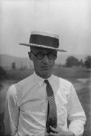

- Title Page
- Introduction
- York's Newspapers
- The School Board
- A new theory
- Darwin's theory
- A legal history of evolution
- Intelligent Design
- When science meets politics
- September story
- The statement and the lawsuit
- Covering the controversy
- Holes in evolutionary theory?
- Spotlight on Dover
- The trial: The plaintiffs' case
- The trial: The defense
A legal history of evolution
Evolution became a subject of bitter debate—and litigation—in the US as it slowly crept into science textbooks. By the 1920s, groups whose faith led them to understand the Bible as a literal account of events took their objections to Darwin’s theory to state legislatures in an effort to limit or ban school instruction in evolution. Traditionally, curriculum in the US was decided by each school district; there was no national requirement. Thus, teaching practices varied widely from state to state, as well as within state boundaries.

John Scopes in 1925.
In 1925, Tennessee became the first state to ban the teaching of evolution entirely from public school science classrooms. The Tennessee Anti-Evolution Act, also known as the Butler Act after the legislator who wrote it, proscribed teaching “any theory that denies the story of the Divine Creation of man as taught in the Bible, and [teaching] instead that man has descended from a lower order of animals.”[1] Eager to test the law’s constitutionality in court, the American Civil Liberties Union (ACLU) recruited a 24-year-old teacher named John Thomas Scopes to be indicted for violating the law. (Scopes was a substitute biology teacher who could not recall whether he had actually taught evolution.) The trial of Tennessee v. John Scopes, which journalist H.L. Mencken famously dubbed the “Monkey Trial,” began in May 1925.
Defense lawyer Clarence Darrow hoped to convince the judge to find the Butler Act unconstitutional according to the “establishment clause” of the First Amendment, which stated that “Congress shall make no law respecting an establishment of religion, or prohibiting the free exercise thereof.” Instead, a jury convicted Scopes of violating the Butler Act on July 21, 1925; Judge John Raulston fined him $100.[2]
Other states meanwhile instituted similar bans on teaching evolution.[3] The subject did not reappear in the courts for decades: Textbook publishers sidestepped the issue by leaving evolution mostly out of biology books.[4] But a wave of court cases in the 1960s and ‘70s affirmed evolution’s place in public schools. In 1968, the Supreme Court’s ruling in Epperson v. Arkansas struck down evolution-banning statutes nationwide, declaring them “products of fundamentalist sectarian conviction.”
The 1970s saw the emergence of “creation science,” whose proponents claimed that scientific evidence supported the Bible’s account of creation. As a scientific theory that competed with evolution, they argued, creation science deserved a place alongside evolution in science curricula. Creation science advocates promoted laws mandating equal time in science classes for creation science and evolution—and were successful in at least 23 states.[5] In 1987, the Supreme Court in the case Edwards v. Aguillard banned these laws, too, as an unconstitutional promotion of religion.
[1] Butler Act, cited in Noah Adams, “Timeline: Remembering the Scopes Monkey Trial,”All Things Considered, July 5, 2005.
[2] Douglas Linder, “The Scopes Trial: An Introduction,” Famous Trials [website], University of Missouri-Kansas City, 1995-2007. In Scopes’ 1927 appeal, the Tennessee Supreme Court ruled that the Butler Act did not violate the establishment clause, but overturned Scopes’ conviction on a technicality.
[3] Noah Adams, “Timeline: Remembering the Scopes Monkey Trial,” All Things Considered, July 5, 2005.
[4] Margaret Talbot, “Darwin in the Dock,” New Yorker, December 5, 2005.
[5] Eugenie Scott, Expert Witness Statement, Selman v. Cobb County, November 17, 2006.